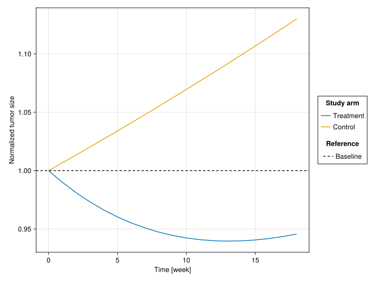
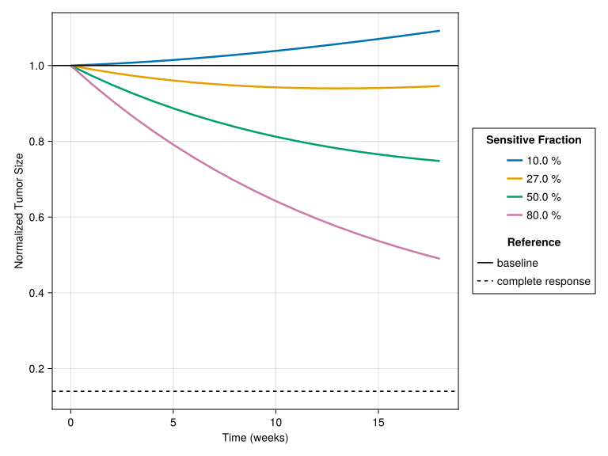
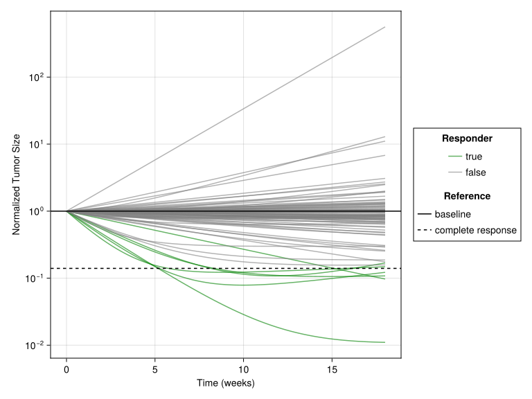

flowchart TB
subgraph tumor["Tumor at Diagnosis"]
direction LR
sens["Treatment-Sensitive Cells<br/>(fraction f)"]
res["Treatment-Resistant Cells<br/>(fraction 1-f)"]
end
sens -->|"Under treatment"| sens_fate["Die at rate k"]
res -->|"Always"| res_fate["Grow at rate g"]
sens_fate --> outcome1["Tumor shrinks initially"]
res_fate --> outcome2["Tumor regrows eventually"]
style sens fill:#ffcccc,stroke:#cc0000
style res fill:#ccffcc,stroke:#00cc00
style outcome1 fill:#e1f5fe,stroke:#01579b
style outcome2 fill:#fff3e0,stroke:#e65100

Tumor Burden Model: Introduction & Biology
NoteTumor Burden Tutorial Series
This is Tutorial 1 of 6 in the Tumor Burden series.
| # | Tutorial | Status |
|---|---|---|
| 1 | Model Introduction (current) | You are here |
| 2 | Copula Vpop Generation | |
| 3 | Global Sensitivity Analysis | |
| 4 | Structural Identifiability | |
| 5 | MILP Calibration | |
| 6 | VCT Simulation |
1 Learning Outcomes
This tutorial introduces the Tumor Burden Model, a foundational example for understanding In Silico Clinical Trials (ISCTs). The model describes tumor dynamics during cancer chemotherapy and will be used throughout this tutorial series (Cortés-Ríos et al., 2025; Qi & Cao, 2022).
In this tutorial, you will learn:
- The clinical context: non-small cell lung cancer (NSCLC) chemotherapy
- The biological basis of tumor response: treatment-sensitive vs resistant cells
- The mathematical model equation and what each parameter represents
- How to build a Pumas model using the
@modelmacro - How to simulate typical patient dynamics
- How to visualize treatment vs control scenarios
2 Background
2.1 Clinical Context: NSCLC Chemotherapy
Non-small cell lung cancer (NSCLC) is the most common type of lung cancer, accounting for approximately 85% of all lung cancer cases. Chemotherapy remains a cornerstone of treatment, but patient responses vary dramatically:
- Some patients achieve complete response (tumor disappears)
- Some achieve partial response (tumor shrinks significantly)
- Others experience progressive disease (tumor grows despite treatment)
The central question: What determines which patients respond to treatment?
TipFrom Observation to Model
Researchers observed that tumors often show a characteristic biphasic response to chemotherapy:
- Initial shrinkage: Chemotherapy kills treatment-sensitive cells
- Eventual regrowth: Treatment-resistant cells proliferate
This observation suggests a simple but powerful model: tumors contain two distinct cell populations with different drug sensitivities.
2.2 The Two-Population Hypothesis
The tumor burden model posits that a tumor consists of two cell populations:
Biological interpretation:
| Population | Symbol | Under Treatment | Biological Basis |
|---|---|---|---|
| Sensitive cells | f | Die at rate k | Express drug targets, susceptible to chemotherapy |
| Resistant cells | 1-f | Grow at rate g | Pre-existing mutations, drug efflux pumps, stem-like properties |
This simple model captures the essence of why some patients respond better than others: patients with a higher fraction of sensitive cells (high f) will show better initial response.
3 Libraries
Load the necessary packages for this tutorial.
using Pumas
using AlgebraOfGraphics
using CairoMakie
using DataFramesMeta
using SummaryTables
using Random
using Statistics
# Set seed for reproducibility
Random.seed!(1234)What each package does:
Pumas: Pharmacometric modeling and simulationAlgebraOfGraphics+CairoMakie: Publication-quality visualizationsDataFramesMeta: DataFrame manipulationSummaryTable: Publication-quality tablesStatistics: Julia standard library for statistics (mean,std, etc.)Random: Julia standard library for random number generation (randn,randn!,seed!, etc.)
4 Part 1: The Model Equation
4.1 Mathematical Formulation
The tumor burden model describes the total tumor size \(N(t)\) as the sum of two exponential terms (Qi & Cao, 2022):
\[N(t) = N_0 \cdot f \cdot e^{-k \cdot t} + N_0 \cdot (1-f) \cdot e^{g \cdot t}\]
Where:
| Symbol | Parameter | Units | Description |
|---|---|---|---|
| \(N_0\) | Initial tumor | normalized | Baseline tumor size (set to 1) |
| \(f\) | Sensitive fraction | unitless | Fraction of treatment-sensitive cells (0 to 1) |
| \(k\) | Death rate | d⁻¹ | Rate at which sensitive cells die under treatment |
| \(g\) | Growth rate | d⁻¹ | Rate at which resistant cells proliferate |
| \(t\) | Time | days | Time since treatment start |
NoteUnderstanding the Equation
Let us break down the two terms:
First term: \(N_0 \cdot f \cdot \exp{(-k \cdot t)}\) — Sensitive cell population
- Starts at \(N_0 \cdot f\) (fraction f of the initial tumor)
- Decays exponentially with rate \(k\) when treated
- Eventually approaches 0 as sensitive cells are eliminated
Second term: \(N_0 \cdot (1-f) \cdot \exp{(g \cdot t)}\) — Resistant cell population
- Starts at \(N_0 \cdot (1-f)\) (the remaining fraction)
- Grows exponentially with rate \(g\)
- Eventually dominates the total tumor
Net effect: Initial shrinkage (first term dominates) followed by regrowth (second term dominates).
4.2 Parameter Values from Literature
The parameter values come from Qi & Cao (2022), who fit this model to NSCLC clinical trial data:
# Population (typical) parameter values
pop_f = 0.27 # 27% of tumor is treatment-sensitive
pop_g = 0.0013 # Resistant cells grow ~0.13% per day
pop_k = 0.0091 # Sensitive cells die ~0.91% per day
# Inter-individual variability (standard deviations on transformed scale)
ω_f = 2.16 # High variability in sensitive fraction
ω_g = 1.57 # Moderate variability in growth rate
ω_k = 1.24 # Moderate variability in death rate
# Residual error (standard deviation)
resid_σ = 0.095
# Critical correlation from the data
cor_f_g = -0.64 # Negative correlation: high f ↔ low g-0.64
TipWhy the Negative Correlation?
The correlation \(\rho(f, g) = -0.64\) is biologically meaningful:
Patients with more sensitive cells (high f) tend to have slower-growing resistant cells (low g).
Possible explanations:
- Tumor heterogeneity: Aggressive tumors may have both fewer sensitive cells AND faster-growing resistant cells
- Evolutionary pressure: In highly proliferative tumors, resistance mechanisms may be more prevalent
- Stem cell fraction: Resistant cells may correlate with cancer stem cell populations
This correlation is crucial for realistic virtual population generation (Tutorial 2).
5 Part 2: Building the Pumas Model
5.1 Model Structure Overview
A Pumas model is defined using the @model macro with several blocks:
flowchart TB
param["@param<br/>Population parameters"]
random["@random<br/>Inter-individual variability"]
cov["@covariates<br/>External inputs (treatment)"]
pre["@pre<br/>Individual parameter calculations"]
init["@init<br/>Initial conditions"]
dynamics["@dynamics<br/>ODE system"]
derived["@derived<br/>Observable outputs"]
param --> pre
random --> pre
cov --> pre
pre --> init
pre --> dynamics
init --> dynamics
dynamics --> derived
style param fill:#e3f2fd,stroke:#1565c0
style random fill:#e3f2fd,stroke:#1565c0
style dynamics fill:#e8f5e9,stroke:#2e7d32
style derived fill:#fff3e0,stroke:#e65100
5.2 Complete Model Definition
tumor_burden_model = @model begin
@metadata begin
desc = "Tumor Burden Model for NSCLC Chemotherapy"
timeu = u"d" # Time unit is days
end
@param begin
# Typical values (population parameters)
tvf ∈ RealDomain(lower=0.0, upper=1.0)
tvg ∈ RealDomain(lower=0.0)
tvk ∈ RealDomain(lower=0.0)
# Inter-individual variability (diagonal covariance matrix)
# Values on the transformed scale (logit for f, log for g and k)
Ω ∈ PDiagDomain(3)
# Residual error (standard deviation)
σ ∈ RealDomain(lower=0.0)
end
@random begin
# Random effects vector (one per parameter)
η ~ MvNormal(Ω)
end
@covariates treatment
@pre begin
# Transform random effects to individual parameters
# f: logit-normal transformation (bounded 0-1)
f = logistic(logit(tvf) + η[1])
# g, k: log-normal transformation (positive values)
g = tvg * exp(η[2])
k = tvk * exp(η[3])
# Treatment effect on death rate
# treatment = 0 → control arm (no killing)
# treatment = 1 → treatment arm (killing at rate k)
k_eff = treatment * k
end
# Initial conditions (normalized tumor = 1)
@init begin
N_sens = f # Sensitive cells
N_res = 1 - f # Resistant cells
end
@dynamics begin
# Sensitive cells: die at effective rate (0 if control, k if treatment)
N_sens' = -k_eff * N_sens
# Resistant cells: always grow at rate g
N_res' = g * N_res
end
@derived begin
# Total normalized tumor size
Nt := @. N_sens + N_res
# Observation with residual error
tumor_size ~ @. Normal(Nt, σ)
end
endPumasModel
Parameters: tvf, tvg, tvk, Ω, σ
Random effects: η
Covariates: treatment
Dynamical system variables: N_sens, N_res
Dynamical system type: Matrix exponential
Derived: tumor_size
Observed: tumor_size5.3 Understanding Each Block
Let’s examine each model block in detail.
5.3.1 The @param Block
tvf ∈ RealDomain(lower=0.0, upper=1.0): Typical value off(bounded between 0 and 1)tvg ∈ RealDomain(lower=0.0): Typical value ofg(positive)tvk ∈ RealDomain(lower=0.0): Typical value ofk(positive)Ω ∈ PDiagDomain(3): Diagonal covariance matrixσ ∈ RealDomain(lower=0.0): Residual error SD
NoteDomain Types
| Domain | Constraints | Use Case |
|---|---|---|
RealDomain() |
Any real number | Unbounded parameters |
RealDomain(lower=0.0) |
Positive only | Rates, clearances |
RealDomain(lower=0.0, upper=1.0) |
Between 0 and 1 | Fractions, bioavailability |
PDiagDomain(n) |
Positive diagonal matrix | Variance-covariance |
5.3.2 The @random Block
η ~ MvNormal(Ω) defines a vector of 3 random effects, sampled from \(\mathcal{N}(0, \Omega)\) for each virtual patient:
η[1]: affectsf(sensitive fraction)η[2]: affectsg(growth rate)η[3]: affectsk(death rate)
5.3.3 The @pre Block: Parameter Transformations
The @pre block contains the key transformations that convert population parameters and random effects into individual parameters:
f = logistic(logit(tvf) + η[1])(bounded between 0 and 1)g = tvg * exp(η[2])(positive value)k = tvk * exp(η[3])(positive value)
ImportantWhy These Transformations?
The transformations ensure:
- Parameters stay in valid ranges:
- f always between 0 and 1 (logit-normal)
- g and k always positive (log-normal)
- Symmetric variability on the transformed scale:
- A patient with η = +1 is as “far from typical” as one with η = -1
- Realistic distributions:
- Log-normal for rates (right-skewed, common in PK/PD)
- Logit-normal for fractions (appropriate for bounded parameters)
5.3.4 The @dynamics Block
ODE dynamics of treatment-sensitive cells:
N_sens' = -k_eff * N_sens- Sensitive cells decrease exponentially when treated
k_eff = 0(control) means no changek_eff = k(treatment) means exponential decay
ODE dynamics of treatment-resistant cells:
N_res' = g * N_res- Resistant cells always grow exponentially
- Independent of treatment
These two ODEs implement the mathematical model for the total number of cells \(N(t)\):
\[N(t) = N_0 f \exp{(-kt)} + N_0 (1-f) \exp{(gt)}\]
6 Part 3: Simulating a Typical Patient
6.1 Setting Up the Simulation
Let us simulate a “typical” patient (η = 0) receiving treatment.
# Population parameters
pop_params = (
tvf=pop_f,
tvg=pop_g,
tvk=pop_k,
Ω=Diagonal([ω_f^2, ω_g^2, ω_k^2]),
σ=resid_σ
)
# Observation times (weekly for 18 weeks)
obs_times = 7 * (0:18)
# Create a subject for the treatment arm
subject_treatment = Subject(
id=1,
covariates=(treatment=true,), # Treatment arm
)
# Create a subject for the control arm
subject_control = Subject(
id=2,
covariates=(treatment=false,), # Control arm
)Subject
ID: 2
Covariates: treatment6.2 Simulating the Typical Patient
This gives individual parameters equal to population typical values:
typical_randeffs = zero_randeffs(tumor_burden_model, subject_treatment, pop_params)(η = [0.0, 0.0, 0.0],)Simulate treatment arm:
sim_treatment = simobs(
tumor_burden_model,
subject_treatment,
pop_params,
typical_randeffs;
simulate_error=false,
obstimes=obs_times,
)SimulatedObservations
Simulated variables: tumor_size
Time: 0:7:126Simulate control arm:
sim_control = simobs(
tumor_burden_model,
subject_control,
pop_params,
typical_randeffs;
simulate_error=false,
obstimes=obs_times,
)SimulatedObservations
Simulated variables: tumor_size
Time: 0:7:126For post-processing and plotting, we convert simulations to DataFrames:
df_treatment = DataFrame(sim_treatment)
df_control = DataFrame(sim_control)19×14 DataFrame
| Row | id | time | tumor_size | evid | treatment | N_sens | N_res | η₁ | η₂ | η₃ | f | g | k | k_eff |
|---|---|---|---|---|---|---|---|---|---|---|---|---|---|---|
| String | Float64 | Float64? | Int64? | Bool? | Float64? | Float64? | Float64? | Float64? | Float64? | Float64? | Float64? | Float64? | Float64? | |
| 1 | 2 | 0.0 | 1.0 | 0 | false | 0.27 | 0.73 | 0.0 | 0.0 | 0.0 | 0.27 | 0.0013 | 0.0091 | 0.0 |
| 2 | 2 | 7.0 | 1.00667 | 0 | false | 0.27 | 0.736673 | 0.0 | 0.0 | 0.0 | 0.27 | 0.0013 | 0.0091 | 0.0 |
| 3 | 2 | 14.0 | 1.01341 | 0 | false | 0.27 | 0.743408 | 0.0 | 0.0 | 0.0 | 0.27 | 0.0013 | 0.0091 | 0.0 |
| 4 | 2 | 21.0 | 1.0202 | 0 | false | 0.27 | 0.750204 | 0.0 | 0.0 | 0.0 | 0.27 | 0.0013 | 0.0091 | 0.0 |
| 5 | 2 | 28.0 | 1.02706 | 0 | false | 0.27 | 0.757062 | 0.0 | 0.0 | 0.0 | 0.27 | 0.0013 | 0.0091 | 0.0 |
| 6 | 2 | 35.0 | 1.03398 | 0 | false | 0.27 | 0.763982 | 0.0 | 0.0 | 0.0 | 0.27 | 0.0013 | 0.0091 | 0.0 |
| 7 | 2 | 42.0 | 1.04097 | 0 | false | 0.27 | 0.770966 | 0.0 | 0.0 | 0.0 | 0.27 | 0.0013 | 0.0091 | 0.0 |
| 8 | 2 | 49.0 | 1.04801 | 0 | false | 0.27 | 0.778014 | 0.0 | 0.0 | 0.0 | 0.27 | 0.0013 | 0.0091 | 0.0 |
| 9 | 2 | 56.0 | 1.05513 | 0 | false | 0.27 | 0.785126 | 0.0 | 0.0 | 0.0 | 0.27 | 0.0013 | 0.0091 | 0.0 |
| 10 | 2 | 63.0 | 1.0623 | 0 | false | 0.27 | 0.792304 | 0.0 | 0.0 | 0.0 | 0.27 | 0.0013 | 0.0091 | 0.0 |
| 11 | 2 | 70.0 | 1.06955 | 0 | false | 0.27 | 0.799546 | 0.0 | 0.0 | 0.0 | 0.27 | 0.0013 | 0.0091 | 0.0 |
| 12 | 2 | 77.0 | 1.07686 | 0 | false | 0.27 | 0.806855 | 0.0 | 0.0 | 0.0 | 0.27 | 0.0013 | 0.0091 | 0.0 |
| 13 | 2 | 84.0 | 1.08423 | 0 | false | 0.27 | 0.814231 | 0.0 | 0.0 | 0.0 | 0.27 | 0.0013 | 0.0091 | 0.0 |
| 14 | 2 | 91.0 | 1.09167 | 0 | false | 0.27 | 0.821675 | 0.0 | 0.0 | 0.0 | 0.27 | 0.0013 | 0.0091 | 0.0 |
| 15 | 2 | 98.0 | 1.09919 | 0 | false | 0.27 | 0.829186 | 0.0 | 0.0 | 0.0 | 0.27 | 0.0013 | 0.0091 | 0.0 |
| 16 | 2 | 105.0 | 1.10677 | 0 | false | 0.27 | 0.836766 | 0.0 | 0.0 | 0.0 | 0.27 | 0.0013 | 0.0091 | 0.0 |
| 17 | 2 | 112.0 | 1.11442 | 0 | false | 0.27 | 0.844415 | 0.0 | 0.0 | 0.0 | 0.27 | 0.0013 | 0.0091 | 0.0 |
| 18 | 2 | 119.0 | 1.12213 | 0 | false | 0.27 | 0.852135 | 0.0 | 0.0 | 0.0 | 0.27 | 0.0013 | 0.0091 | 0.0 |
| 19 | 2 | 126.0 | 1.12992 | 0 | false | 0.27 | 0.859924 | 0.0 | 0.0 | 0.0 | 0.27 | 0.0013 | 0.0091 | 0.0 |
6.3 Visualizing Treatment vs Control
# Combine data for plotting
combined_df = vcat(
df_treatment, df_control;
source=:arm => ["treatment", "control"],
)
# Create plot using AlgebraOfGraphics
specs_sims = data(combined_df) *
mapping(:time => (t -> t / 7) => "Time (weeks)", :tumor_size => "Normalized Tumor Size", color=:arm => "Study Arm") *
visual(Lines, linewidth=3)
# Add reference line
specs_reference = mapping([1.0], linestyle=["baseline"] => "Reference") * visual(HLines)
draw(specs_sims + specs_reference)
NoteInterpreting the Curves
Treatment arm:
- Weeks 0 - ~13: Tumor shrinks as treatment kills sensitive cells (27% of initial tumor)
- Days ~13 - 18: Tumor regrows as resistant cells (73% of initial tumor) continue proliferating
- Nadir (minimum): Occurs when the declining sensitive population equals the growing resistant population
Control arm:
- No killing of any cells
- Both populations grow at their respective rates (but
fdoesn’t affect control sincek_eff = 0) - Exponential growth dominated by the larger resistant population
7 Part 4: Understanding the Dynamics
7.1 Analytical Solution
For deeper understanding, let us examine the analytical solution.
Nadir (minimum tumor size) occurs when \(N'(t) = 0\), i.e., when \[ -k f \exp{(-kt)} + g (1-f) \exp{(gt)} = 0. \]
Solving this equation yields
\[ t = \frac{\ln{(kf / (g(1-f)))}}{k + g}. \]
Thus, time to nadir for a typical patient is (in days)
# days
t_nadir = log(pop_k * pop_f / (pop_g * (1 - pop_f))) / (pop_k + pop_g)91.46995902992803or equivalently ={julia} t_nadir / 7 weeks.
Let us compute the tumor size at nadir and after 18 weeks for a typical patient:
sim_nadir = simobs(
tumor_burden_model,
subject_treatment,
pop_params,
typical_randeffs;
simulate_error=false,
obstimes=[0, t_nadir, 18 * 7]
)
select(DataFrame(sim_nadir), [:time, :tumor_size])3×2 DataFrame
| Row | time | tumor_size |
|---|---|---|
| Float64 | Float64? | |
| 1 | 0.0 | 1.0 |
| 2 | 91.47 | 0.939631 |
| 3 | 126.0 | 0.945708 |
We see that this typical patient would not achieve “complete response” of a tumor size < 0.14.
7.2 Sensitivity to Parameters
How do the model outputs change with different parameter values?
# Create DataFrame for all f values
f_values = [0.10, 0.27, 0.50, 0.80]
# Build DataFrame with all trajectories
sensitivity_df = mapreduce(vcat, f_values) do f
sim = simobs(
tumor_burden_model,
subject_treatment,
merge(pop_params, (; tvf=f)),
typical_randeffs;
simulate_error=false,
obstimes=obs_times,
)
select(DataFrame(sim), [:time, :tumor_size, :f])
end
# Create plot using AlgebraOfGraphics
# Plot simulation results
specs_sims = data(sensitivity_df) *
mapping(:time => (t -> t / 7) => "Time (weeks)",
:tumor_size => "Normalized Tumor Size",
color=:f => (x -> string(round(100 * x; digits=1), " %")) => "Sensitive Fraction") *
visual(Lines, linewidth=2.5)
# Add reference lines
specs_references = mapping([1.0, 0.14], linestyle=["baseline", "complete response"] => "Reference") * visual(HLines)
draw(specs_sims + specs_references)
f) on tumor dynamics. Higher sensitive fraction leads to deeper initial response and longer time to regrowth.
TipClinical Insight
The parameter f (sensitive fraction) is the primary driver of treatment response:
| f value | Clinical interpretation |
|---|---|
| < 0.15 | Poor responder — most cells are resistant from the start |
| 0.25-0.35 | Typical responder — moderate initial response, eventual progression |
| > 0.50 | Good responder — deep initial response, delayed progression |
| > 0.85 | Excellent responder — may achieve durable complete response |
This explains why f dominates the global sensitivity analysis (Tutorial 3).
8 Part 5: Population Variability Preview
8.1 Simulating Multiple Patients
Let us generate trajectories for a small sample of virtual patients.
patients = [Subject(; id, covariates=(; treatment=true)) for id in 1:100]
# Simple sampling (not using copulas yet - that's Tutorial 2)
# Just to show variability concept
patients_sims = simobs(tumor_burden_model, patients, pop_params; obstimes=0:(7*18), simulate_error=false)Simulated population (Vector{<:Subject})
Simulated subjects: 100
Simulated variables: tumor_sizeLet us inspect the variability of the simulated values of parameters f, g and k:
fgk_sims = postprocess(patients_sims) do generated, _
(; f=only(unique(generated.f)), g=only(unique(generated.g)), k=only(unique(generated.k)))
end |> DataFrame
overview_table(fgk_sims)| No | Variable | Stats / Values | Freqs (% of Valid) | Graph | Valid | Missing |
| 1 | f [Float64] |
Mean (sd): 0.445 (0.351) min ≤ med ≤ max: 0.00045 ≤ 0.405 ≤ 0.995 IQR (CV): 0.74 (0.79) |
100 distinct values | 100 (100%) |
0 (0%) |
|
| 2 | g [Float64] |
Mean (sd): 0.00315 (0.00642) min ≤ med ≤ max: 3.08e-5 ≤ 0.000958 ≤ 0.0502 IQR (CV): 0.00243 (2.04) |
100 distinct values | 100 (100%) |
0 (0%) |
|
| 3 | k [Float64] |
Mean (sd): 0.0168 (0.0206) min ≤ med ≤ max: 0.000233 ≤ 0.00898 ≤ 0.107 IQR (CV): 0.016 (1.22) |
100 distinct values | 100 (100%) |
0 (0%) |
|
| Dimensions: 100 x 3 Duplicate rows: 0 | ||||||
# Plot simulations
tumor_size_df = @chain DataFrame(patients_sims) begin
@select :id :time :tumor_size
@groupby :id
@transform! :responder = minimum(:tumor_size) < 0.14
end
specs_sims = data(tumor_size_df) *
mapping(
:time => (t -> t / 7) => "Time (weeks)",
:tumor_size => "Normalized Tumor Size",
color=:responder => sorter([true, false]) => "Responder",
group=:id) *
visual(Lines; alpha=0.6)
# Add reference lines
specs_references = mapping([1.0, 0.14], linestyle=["baseline", "complete response"] => "Reference") * visual(HLines)
draw(specs_sims + specs_references, scales(Color=(; palette=[:green, :gray])); axis=(; yscale=log10))
ImportantLooking Ahead
This preview shows why we need:
Copula sampling (Tutorial 2): The random sampling above ignores parameter correlations. In reality, patients with high f tend to have low g (r = -0.64).
Calibration (Tutorial 5): The response rate from random sampling may not match real clinical trial data.
Systematic analysis: We need to understand which parameters matter most (Tutorial 3: GSA) and whether they can be estimated (Tutorial 4: Identifiability).
9 Summary
9.1 Key Concepts
The Tumor Burden Model describes cancer response to chemotherapy using two cell populations:
- Treatment-sensitive cells (fraction f) that die at rate k
- Treatment-resistant cells (fraction 1-f) that grow at rate g
The mathematical model: \[N(t) = N_0 \cdot f \cdot e^{-k \cdot t} + N_0 \cdot (1-f) \cdot e^{g \cdot t}\]
Parameters from clinical data:
f = 0.27(27% sensitive),g = 0.0013d⁻¹,k = 0.0091d⁻¹- Correlation
r(f, g) = -0.64
Pumas model structure:
@param: Population parameters@random: Inter-individual variability@pre: Parameter transformations (logit-normal forf, log-normal forgandk)@dynamics: ODE system@derived: Observable outputs
Clinical insight:
- The sensitive fraction (
f) is the primary driver of response - Population variability creates diverse outcomes
- The sensitive fraction (
9.2 What’s Next
In Tutorial 2: Copula Vpop Generation, we will:
- Learn why correlated parameter sampling matters
- Understand Gaussian copulas and Sklar’s theorem
- Generate realistic virtual populations preserving the r(f,g) = -0.64 correlation
- Validate that generated populations match expected distributions
9.3 Quick Reference: Key Functions
| Function | Purpose |
|---|---|
@model begin ... end |
Define a Pumas model |
Subject(id, covariates, time) |
Create a simulation subject |
simobs(model, subject, params, randeffs) |
Simulate observations |
logit(x) / logistic(x) |
Bounded parameter transformations |
9.4 References
Cortés-Ríos, J., Magee, M., Sher, A., Jusko, W. J., & Desikan, R. (2025). A step-by-step workflow for performing in silico clinical trials with nonlinear mixed effects models. CPT: Pharmacometrics & Systems Pharmacology. https://doi.org/10.1002/psp4.70122
Qi, T., & Cao, Y. (2022). Virtual clinical trials: A tool for predicting patients who may benefit from treatment beyond progression with pembrolizumab in non-small cell lung cancer. CPT: Pharmacometrics & Systems Pharmacology, 12(2), 236–249. https://doi.org/10.1002/psp4.12896